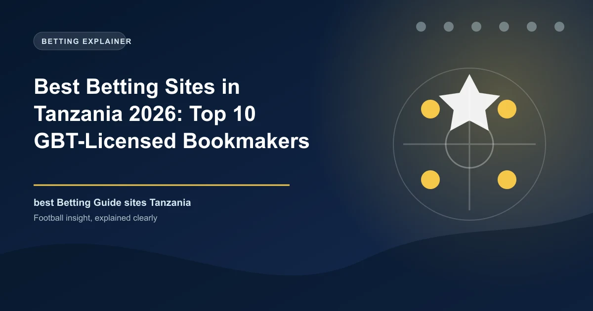

Best Betting Sites in Tanzania 2026: Top 10 GBT-Licensed Bookmakers Ranked

Tanzania is one of the fastest-growing mobile betting markets in Africa, with mobile money doing the heavy lifting at almost every bookmaker. Every site worth your shillings holds a licence from the Gaming Board of Tanzania (GBT). Here are the ten we rate highest for 2026.

Betting is deeply embedded in Tanzanian everyday life. A 2026 pan-African survey found 56% of Tanzanian respondents had placed a sports bet at least once, and research firms projected Tanzania's iGaming revenue at roughly $7.4 million for 2025. Unsurprisingly, the country is one of the most competitive bookmaker markets on the continent, with more than thirty licensed sports betting and online-gaming brands fighting for attention.
What makes the Tanzanian market distinct is mobile money. The vast majority of deposits and withdrawals run through M-Pesa (Vodacom), Mixx by Yas (the rebranded Tigo Pesa), Airtel Money and HaloPesa, and the lightest, fastest platforms win. If a site loads slowly on a 4G connection or makes you buy airtime to fund a wallet, local punters simply move on.
This guide ranks the ten best Tanzanian bookmakers for 2026 based on our testing, covering GBT licence status, odds margins, mobile-money support, payout speed, welcome value and Swahili support.
Tanzania Betting at a Glance
| Factor | Detail |
|---|---|
| Currency | Tanzanian shilling (TZS) |
| Regulator | Gaming Board of Tanzania (GBT) under the Gaming Act, Cap. 41 |
| Legal status | Legal for GBT-licensed operators, mainland and Zanzibar |
| Minimum age | 18 |
| Tax on winnings | 12% withheld on betting winnings, 15% on casino winnings (TRA) |
| Payment methods | M-Pesa, Mixx by Yas, Airtel Money, HaloPesa — mobile money dominates |
| Population | 68+ million |
| Most popular sports | Premier League, Tanzania Mainland Premier League, English and German leagues, tennis |
Know the Rules: GBT Licensing and the 12% Tax
The Gaming Board of Tanzania is the sole authority for issuing gambling licences and supervising operators through its online registers. Any bookmaker accepting TZS deposits from players inside Tanzania is expected to hold a valid GBT betting or online-gaming licence, and the board publishes licensed regist. The practical check for punters is simple: open the site footer, confirm the licence, then cross-check the brand against the GBT list published at gamingboard.go.tz.
Winnings are taxed at source. The Tanzania Revenue Authority applies a 12% withholding on sports-betting winnings and 15% on casino winnings, so the figure shown on your bet slip is pre-tax. Odds quotes and promotions are still competitive across the licensed field, but always run the post-tax maths before comparing brands on advertised value.
How We Ranked the Sites
We audited twenty-plus bookmakers available to Tanzanian punters in 2026, scoring each on GBT licence verification, odds margins on football, mobile-money integration and payout reliability, welcome-offer fairness, and mobile performance on typical local data connections. Headline bonus numbers were weighed only after reading the wagering terms.
The Top 10 Betting Sites in Tanzania, Ranked
1. SportyBet — Best Overall
SportyBet is Tanzania's clear market leader. Launched in 2017 and operated by Marawin Ltd, it holds roughly 40% of the country's online sportsbook market with around 1.5 million active players. The platform pairs fast, low-friction mobile-money deposits across all four major wallets with deep live betting, cash-out and Aviator, plus a lightweight Android app built for African data speeds.
- Minimum deposit: ~TZS 1,000
- Payments: M-Pesa, Mixx by Yas, Airtel Money, HaloPesa
- Strengths: market-leading product, live betting, cash-out, Aviator
2. Betway — Best for Trust and App Quality
Betway's Tanzanian branch is operated by Media Bay Ltd under the Super Group network and is one of the few local operations backed by a global group. It offers a genuinely strong mobile app for Android and iOS, very low minimum stakes (from TZS 1 on some markets) and deep English and local league coverage.
- Minimum deposit: from TZS 1
- Payments: M-Pesa, Mixx by Yas, Airtel Money
- Strengths: global backing, polished app, trusted brand
3. BetPawa — Best for Low Stakes and Jackpots
BetPawa is the most searched betting brand in Tanzania, with more than 20 million monthly searches dwarfing every competitor. Its formula is simple: no minimum stake (literally TZS 1 on football), a 250% win bonus on accumulators, a free-to-play jackpot, SMS betting for feature-phone users, and the lowest minimum deposit in the market at TZS 500. There is no dedicated app, but the mobile site is among the fastest anywhere.
- Minimum stake: TZS 1
- Minimum deposit: TZS 500
- Payments: all four mobile-money wallets
- Strengths: unbeatable accessibility, lots of jackpots
4. SportPesa — Best for Football Depth
The historic East African brand still matters in Tanzania. Operated by Nexis Global, SportPesa brings deep football line-building and popular paybill integration, and its Tanzanian traffic (about 30% of its overall Africa base) reflects the strength of the local product. Expect instant mobile-money deposits and reliable same-day withdrawals.
- Payments: M-Pesa, Tigo Pesa, Airtel Money via paybill
- Strengths: deep football markets, established brand, multiple apps
5. Premier Bet — Best Retail Plus Online Hybrid
Premier Bet is one of Africa's oldest sportsbooks, founded in 1997 and still running more than 100 physical betting shops in Tanzania alongside its online platform. Its legacy Premier Bet Zone network lets you register, deposit and even collect winnings in person, and the platform is deliberately Kiswahili-first. The welcome offer is generous too: a 150% match up to TSh 100,000 plus free bets and spins.
- Welcome offer: 150% up to TSh 100,000 + TSh 3,000 free bet
- Withdrawals: under 15 minutes via mobile money, mostly
- Payments: M-Pesa, Tigo Pesa, Airtel Money, HaloPesa, Selcom, vouchers
6. 1xBet — Best for Market Depth
Operated in Tanzania by Katavi Gaming Ltd, 1xBet offers the deepest betting menu anywhere in the market, with tens of thousands of pre-match markets daily and strong live coverage, streaming and cash-out. The multi-tier welcome package is among the most generous, though wagering requirements are demanding.
- Strengths: unmatched market depth, live streaming, crypto and mobile-money support
- Watch out for: complex bonus terms, 5x accumulator rollover
7. Betika — Best Jackpots and Daily Promos
Operated by Paladin & Associates, Betika has built a loyal following around big-jackpot games, daily soccer specials and a low minimum stake of TZS 100. It is a mobile-first brand popular across East Africa, with instant deposits and consistent payout reliability.
- Minimum stake: TZS 100
- Strengths: jackpots, low entry point, strong promos
8. 22Bet — Best for Straightforward Value
Operated by Betwin Ltd since 2017, 22Bet is a no-frills international brand with excellent football and tennis coverage, responsive support and honest odds. Deposits via M-Pesa, Airtel and Tigo Pesa are quick, and regular weekend reloads keep value flowing for existing customers.
- Minimum deposit: ~TZS 2,300
- Strengths: solid all-round odds, good support, dependable payouts
9. Helabet — Best Swahili Experience
Hela Bet, operated by Cheza IT Solutions, is a growing brand offering around 10,000 events a day with a fully localised Kiswahili interface. It supports all major local payment services including M-Pesa, Ezypesa, Airtel and Huduma, making it a favourite among mobile-first bettors.
- Events: ~10,000 daily
- Strengths: full Swahili, broad local payment support
10. PM Bet — Best Low-Data Platform
PM Bet has operated since 2014 under Playmaster Gaming Corporation and built its reputation on a low-data platform that works on older Android phones and slow connections. It covers almost every major football league in the world, adds Aviator and live casino, and stays beloved by bargain data-conscious punters.
- Founded: 2014
- Strengths: extreme data efficiency, broad football coverage, Aviator
Quick Comparison: What to Choose
| If You Want... | Top Choice | Runner-Up |
|---|---|---|
| Best overall | SportyBet | Betway |
| Lowest stakes | BetPawa (TZS 1) | Betway |
| Deepest football markets | SportPesa | 1xBet |
| Retail plus online | Premier Bet | SportPesa |
| Jackpots and promos | Betika | BetPawa |
| Swahili-first platform | Helabet | Premier Bet |
| Lowest data usage | PM Bet | BetPawa (SMS betting) |
How to Choose Your Tanzanian Betting Site
If you live on M-Pesa and bet Premier League and Azam Premier League football, SportyBet covers you best. Low-budget punters should start with BetPawa; jackpot fans should add Betika. Serious traders chasing the biggest menus belong on 1xBet or SportPesa, while anyone who values a physical shop for support and cash will want Premier Bet. Whichever you pick, confirm the GBT licence in the footer first, keep your mobile-money number matching your account, and read the 12% winnings tax into your expectations.
Responsible Gambling in Tanzania
GBT-licensed operators are required to offer deposit limits, time-outs and self-exclusion, and the regulator publishes consumer guidance on its portal. Only bet money you can afford to lose, set a weekly deposit limit before you start, and never chase losses by raising stakes on accumulators.
Frequently Asked Questions
Is online betting legal in Tanzania?
Yes. Online sports betting is legal across Tanzania when offered by an operator holding a valid Gaming Board of Tanzania (GBT) licence. The legal betting age is 18. Always cross-check a bookmaker against the GBT online register before depositing.
Which betting sites accept M-Pesa in Tanzania?
Nearly all licensed bookmakers do. M-Pesa (Vodacom), Mixx by Yas (Tigo Pesa), Airtel Money and HaloPesa are accepted at SportyBet, Betway, BetPawa, SportPesa, Premier Bet, Betika, 1xBet and 22Bet, among others. Deposits via mobile money are typically instant.
Are betting winnings taxed in Tanzania?
Yes. The Tanzania Revenue Authority applies a 12% withholding on sports-betting winnings and 15% on casino winnings, deducted before payout. Factor that into any bonus or odds comparison.
Do Tanzanian betting sites have mobile apps?
Many do. SportyBet, Betway and SportPesa offer Android and iOS apps, 1xBet and Betwinner provide Android APKs, while BetPawa and Premier Bet rely on fast mobile-optimised sites and SMS betting. App availability changes, so confirm on the official operator site before downloading.
What is the minimum legal betting age in Tanzania?
18. Operators must verify age before opening an account, and betting under the minimum age is an offence under the Gaming Act.
Put These Principles Into Practice Today
Every strategy on this page is only as good as the markets you apply it to. Check the latest predictions, odds, and in-play opportunities below.
Last updated: August 2026 | By Tochukwu Mesigo |
Build Winning Accumulator Tickets
Generate optimized accumulator combinations from today's data-driven predictions. Set your target odds and get instant ticket suggestions.
Pro Ticket Builder →